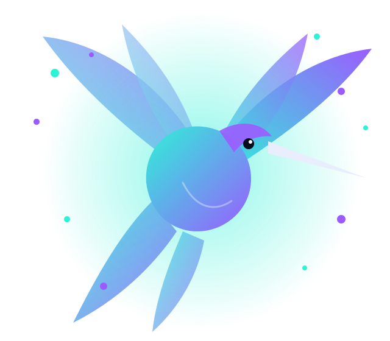

Mutig in Farbe
Dunkler Grund, leuchtendes Türkis und Violett. Drei Stimmungen lassen sich per Klick oder Tastatur wechseln.
Für Ideen, die mehr wollen
Manche Ideen sind zu gut, um nur im Kopf zu bleiben. Gib deiner Vision Farbe. Und Flügel.

Dunkler Grund, leuchtendes Türkis und Violett. Drei Stimmungen lassen sich per Klick oder Tastatur wechseln.
Der Kolibri ist das Herzstück: leicht, schnell und voller Farbe. Er schwebt, sofern Bewegung erwünscht ist.
Gestaltet für Smartphone und Desktop, mit klaren Kontrasten und großen Bedienflächen.
Eigenes Designkonzept von SECRET 58. Dies ist kein Kundenauftrag und zeigt keine echten Kunden, Bewertungen oder Zahlen. Der Dialog „Projektidee festhalten“ sendet nichts: Die Idee bleibt auf Ihrem Gerät und lässt sich als Textdatei speichern.